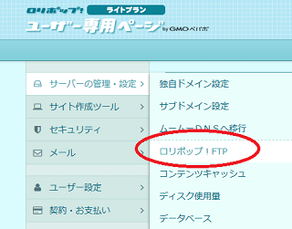
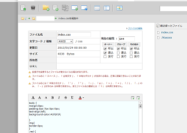
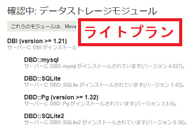
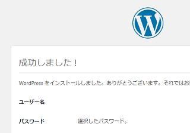

ロリポップ！のレンタルサーバー
ロリポップは東証1部上場のＧＭＯペパボ(株)運営による老舗のレンタルサーバーです。
具体的で分かりやすいマニュアルが充実しており、女性や学生など多くのユーザーに利用されています。
→ ロリポップ！
マルチドメイン対応で無料独自SSLにも対応しており、サイト運営に必要な機能はすべてそろっています。問合せのサポート体制についても充実しているため、初心者の方に最適なレンタルサーバーといえるでしょう。
ロリポップの料金プランを比較
シンプルなホームページの場合は月額110円のエコノミープランがあり、こちらの格安プランでも容量が20GB、マルチドメイン数が50個あります。当サイトでご紹介しているような静的なホームページで作成する際には、エコノミープランでも十分な容量かと思います。
ただし、エコノミープランではWordPressを利用できないため、CMSを利用する場合にはデータベースの利用が可能なライトプラン以上を選択されるとよいでしょう。
- エコノミープラン：月額110円～、初期費用1,650円
- ライトプラン：月額220円～、初期費用1,650円
- スタンダード（※旧チカッパ）：月額550円～、初期費用1,650円
- ハイスピード（※LiteSpeed＋SSD）：月額550円～、初期費用0円
- エンタープライズ：月額2,200円～、初期費用3,300円
（※すべて税込）
ただし、上記の価格は「36ヶ月」の長期契約をした際の料金のため、「12ヶ月」の１年契約の場合は以下の月額料金になります。
■12ヶ月契約の場合
- エコノミー：月額110円、初期費用1,650円
- ライト：月額330円、初期費用1,650円
- スタンダード：月額550円、初期費用1,650円
- ハイスピード：月額825円、初期費用0円
- エンタープライズ：月額2,200円、初期費用3,300円
エコノミープランではデータベースの「SQLite」は利用できるものの、「MySQL5」は利用できないため、「WordPress」などのCMSを利用して作成する際には上位プランの「ライト」か「スタンダード」、「ハイスピード」を利用されることをおすすめします。
特に、最新のハイスピードプランでは次世代サーバーのLiteSpeedと高速SSDが採用されているためWordPressとの相性は抜群です。そのほか、ビジネスに最適な「エンタープライズプラン」などもあります。
ロリポップはＧＭＯペパボ株式会社の運営になりますが、同社のレンタルサーバーにはワンランク上の「ヘテムル」もあり、そちらも管理画面が使いやすくおすすめです。
オリジナルのファイルマネージャーで使いやすい
ロリポップのファイルマネージャーは海外製のcPanelなどではなく、オリジナルの編集画面で日本語に対応していて使いやすいです。このファイルマネージャーを使用する際は「WEBツール - ロリポップ！FTP」の箇所から利用できます。


CMSではなく、ファイルマネージャーやFTP接続などで静的なHTMLサイトを作成する場合、データベースの機能は特に必要はないため、月額110円のエコノミープランでも特に問題ないかと思います。
CMSの利用はライトプラン以上がおすすめ
WordPressなどのCMSをインストールして、そちらの管理画面でブログを作成する場合、データベースの利用が可能なライトプラン以上を契約する必要があります。MySQL5の利用可能数はライトプランで「１個」、スタンダードで「50個」、ハイスピードで「無制限」となっています。
Movable Typeについては利用できるプランとできないプランがあり、お試し期間中にチェックされてみることをおすすめします。
当サイト運営者の場合、「ライトプラン」では利用することができました。

「ハイスピードプラン」では「DBD::mysql」がなかったので利用できませんでしたが、事前にチェックされてみることをおすすめします。
WordPressについては「ハイスピードプラン」でも「ライトプラン」でも利用することができますが、「エコノミープラン」については利用できません。

また、以前まで付属ブログサービスに「ロリポブログ」がありましたが、こちらについては新規受付が停止しています。
いずれにしても、ブログを作成する際は高速な「ハイスピードプラン」を選択し、WordPressを設置するのがおすすめです。
個人向け格安レンタルサーバー
- エックスサーバー （高機能・人気・おすすめ・無料SSL）
- さくらインターネット （格安・人気・老舗・無料SSL）
- お名前.comサーバー （GMOグループ・人気・無料SSL）
- ロリポップ！ （初心者向け・人気・格安・無料SSL）
- コアサーバー （高機能・上級者向け・無料SSL）
- ヘテムル （無料SSL）
- スターサーバー （格安・無料SSL）
- XREA （格安・老舗・無料SSL）
- グーペ （お店向け・無料SSL）
- ConoHa WING（コノハ ウィング） （高速・無料SSL）
- mixhost （LiteSpeed・成人向け可・無料SSL）
- カラフルボックス （LiteSpeed・cPanel・無料SSL）
- WebARENA（ウェブアリーナ） （格安・老舗・無料SSL）
- Z.comレンタルサーバー （高速・格安SSL）
- リトルサーバー （格安・無料SSL）
- ABLENET（エイブルネット） （格安・老舗）
- エクストリム （格安・無料SSL）
- JSNレンタルサーバー （格安・老舗・無料SSL）
- Fc2 lite （格安・無料SSL）
- マイサーバー1000 （無料SSL）
- クイッカ （IP分散・cPanel）
- ドメインキング （Plesk）
- ＠ＷＡＰＰＹ （格安・Plesk）
- ハッスル （格安）